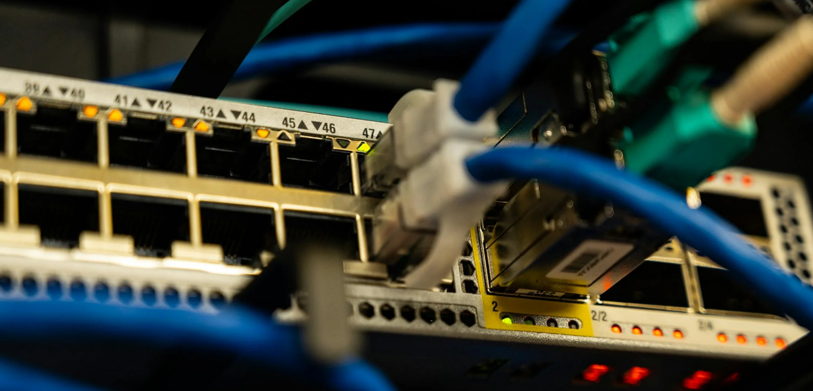

Routers para Sucursales
Conectividad segura y fiable entre oficinas y sedes remotas. Ideal para empresas que necesitan extender su red corporativa con desempeño y seguridad.
Catalyst IR1100 (Resistente)
Router compacto y resistente, compatible con SD-WAN y poÃÅsibilidades modulares para sucursales.
ISR Series (Versátil)
Rendimiento equilibrado para VPN, seguridad y gestión centralizada.

Edge Router Secure
Optimizado para acceso de sucursales con cifrado y QoS.